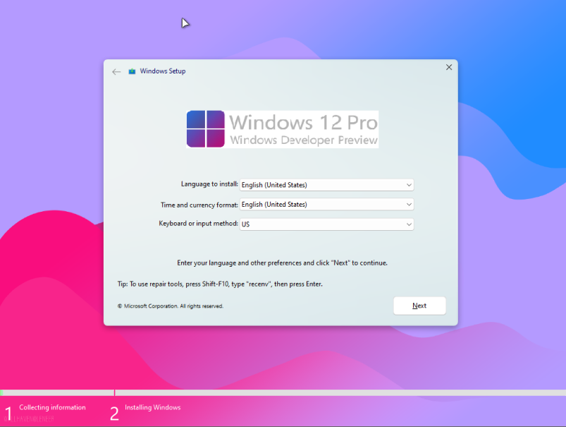
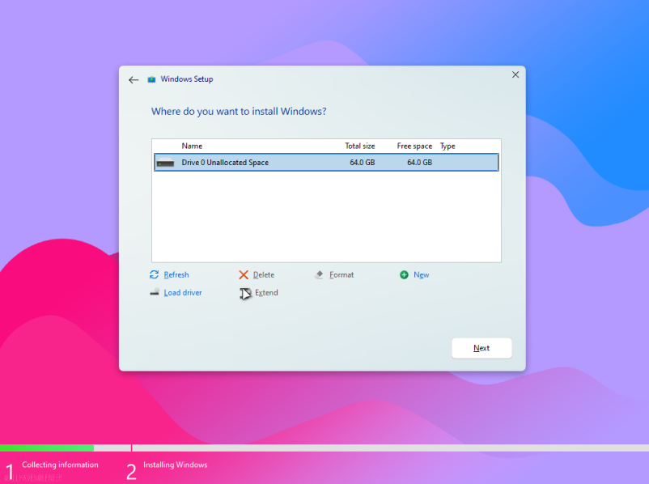
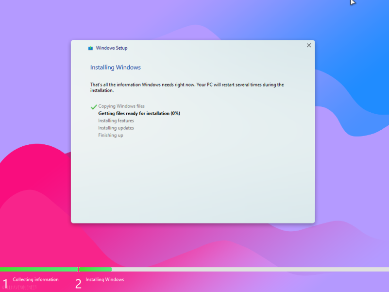
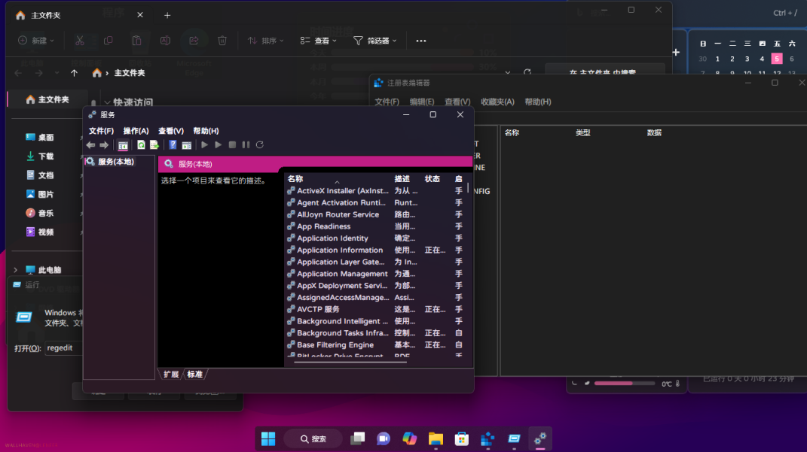
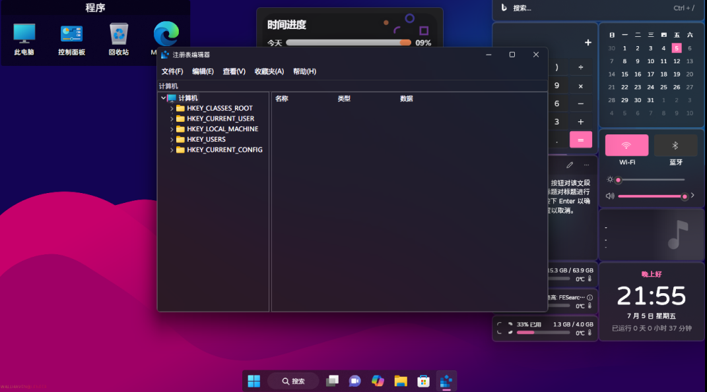
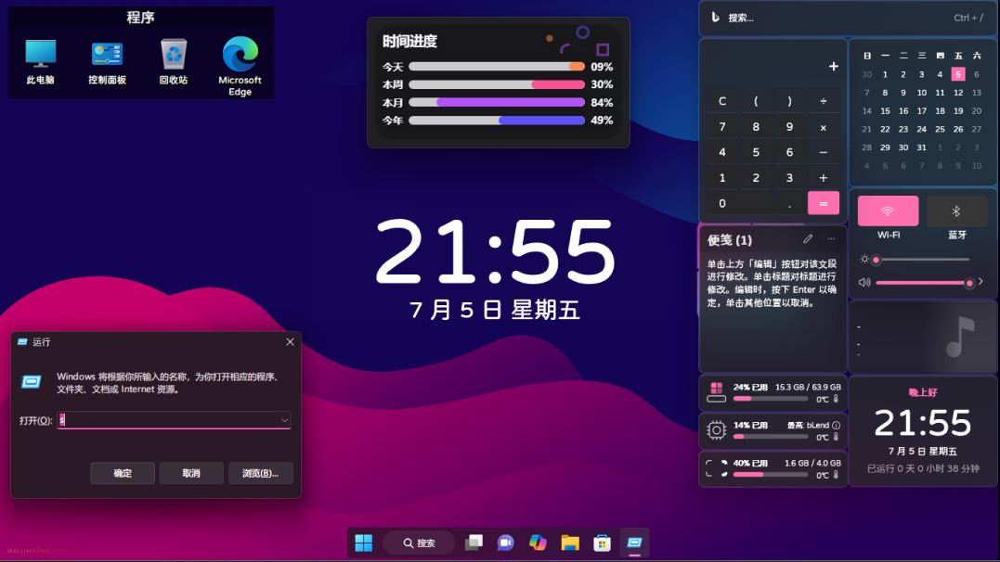
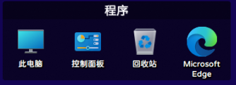
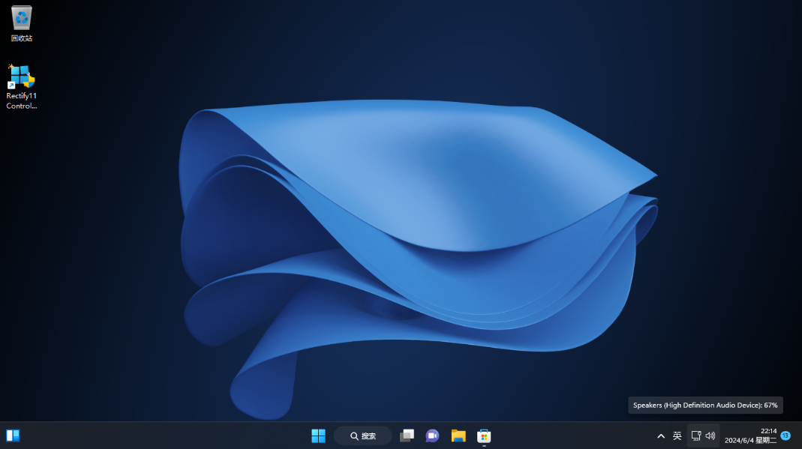
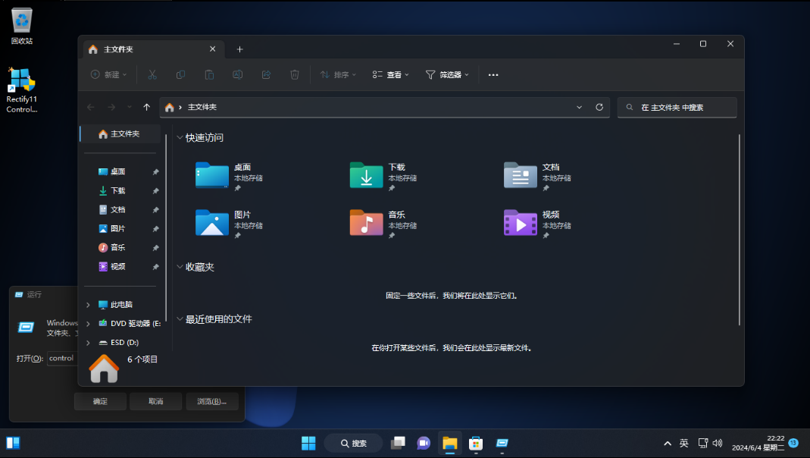
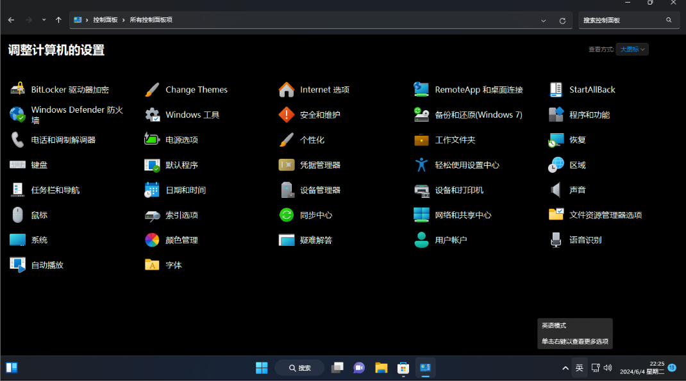

认识/下载Windows12
本文更新于2024/7/4
欢迎来到Windows12项目官网！
一、下载。
先附上下载链接：
1.Windows12.1下载地址：
2.Windows12.2下载地址：
二、Windows12.1/Windows12.2简介：
1.母盘：
系统本体使用了Tiny11-b2的22621.1994版本。 #感谢@NTDEV
注意：需要全局代理才能正常访问！
系统安装PE使用了Rectify11 v2 （22000.318版本）。 #感谢@Rectify11
注意：Rectify11网站暂时关站，官方说法是准备更新V4,7月20号才能正常访问！
2.更新的安装程序



我们更新了所有安装程序界面，包括图标、窗口、按钮、多选框、文本框、输入框等等，使得安装程序界面更加的现代化，符合Windows的Modern和Fluent设计风格。
一些窗口的子窗口（及安装PE中的父窗口）的Basic主题全部变得Windows11化！
伟大的改进。
如上图。
3.系统简介
我们修复了 Windows 一直以来的最大诟病：深色模式,使得模式充满整个系统（当你使用深色模式时）。
如下图：

我们添加了全局Mica（云母）效果，并改进了系统选框、按钮、文本框等UI，使系统更加 UWP 化。
如下图：


使系统更加美观！
4.改进的系统字体和字体渲染：
我们使用了“极影毁片园”字体并改进了渲染，使字体在低DPI下更加清晰、美观。

5.改进的全局图标
注：此处虚拟机崩溃卡死，无法演示，使用Reg-RamOS演示，效果相同。



6.更多改进：
1.改进的屏幕亮度-随时间调节屏幕亮度。
2.Dock任务栏
等等！
认识/下载Windows12
http://example.com/2024/07/03/认识-下载Windows12/